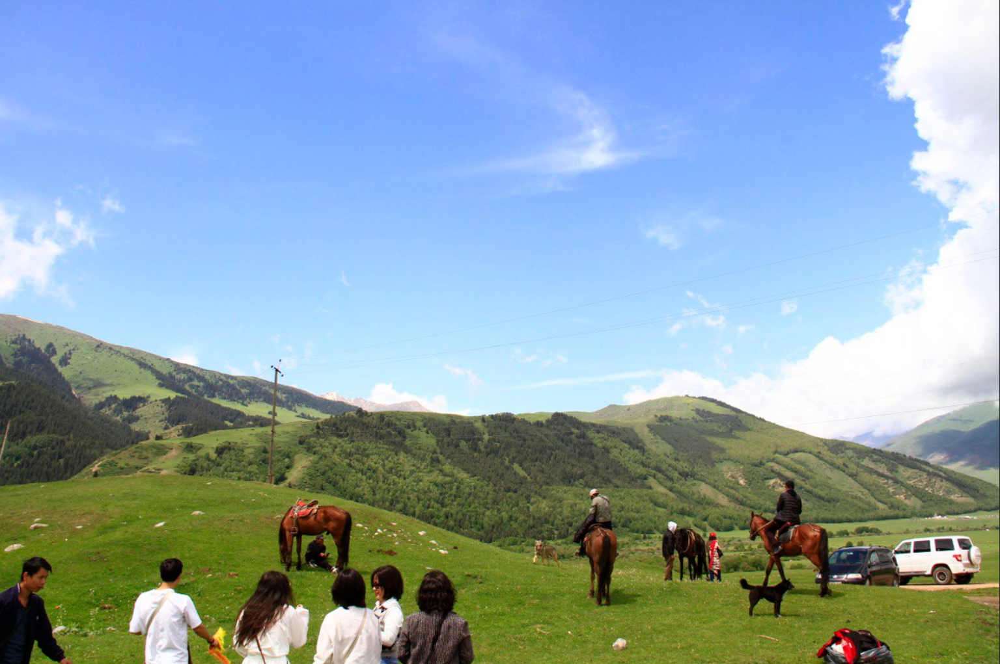
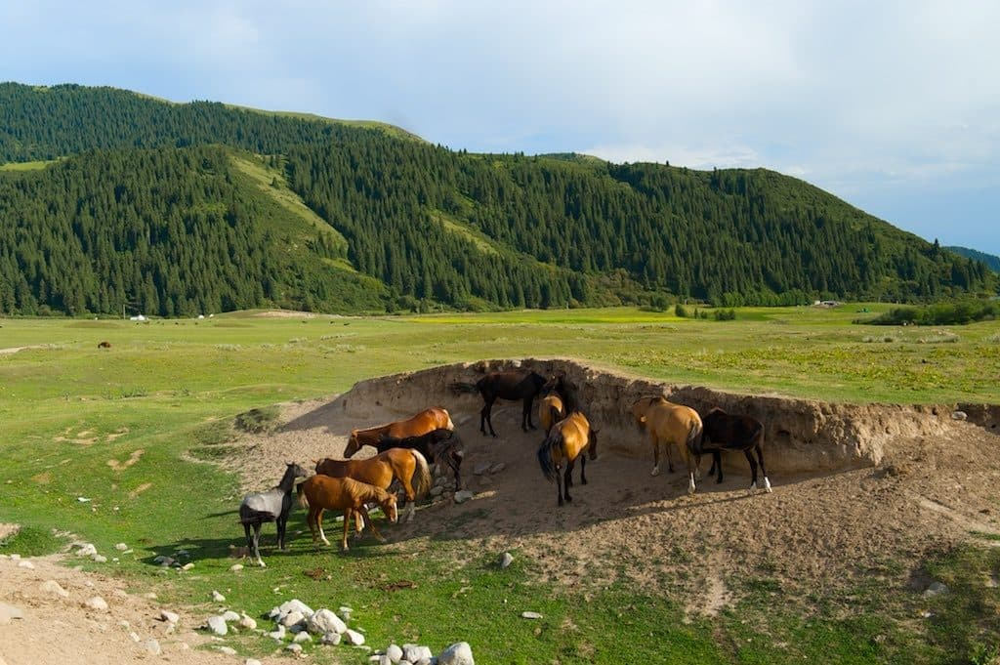

Semenov Gorge is a classic north shore Issyk-Kul escape: forest roads, a river, green meadows, and mountain peaks in the distance. It’s easy to reach by car and perfect for short hikes, photos, or a relaxed picnic day.

01
What is Semenov Gorge?
A wide alpine valley on the north side of Issyk-Kul. The scenery changes fast: from trees and river turns to open meadows and mountain viewpoints.

Easy Walks
Short trails along the river and through meadow areas. Perfect for a relaxed half-day.

Horse Riding
Classic Kyrgyz vibe. Great for photos and a more “mountain” experience without hard hiking.
03
Quick tips before you go
-
🌄
Go in the morning Cleaner sky, calmer vibe, and better photos.
-
🥾
Shoes with grip Some areas can be muddy or rocky near water.
-
🧺
Bring snacks / tea Best experience is slow: walk + sit + enjoy the valley.
-
📸
Wide lens helps Valleys look bigger and more cinematic in wide shots.